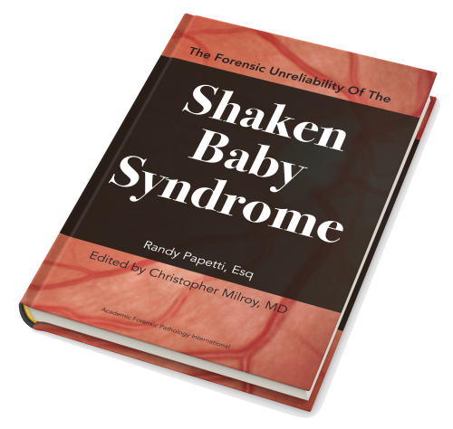

Randy Papetti est un avocat américain travaillant pour la firme Lewis Roca Rothgerber Christie à Phoenix, Arizona. Il travaille depuis une vingtaine d'années sur des affaires de faux diagnostics de « bébés secoués ».
Il vient de publier ce qui constitue désormais le livre de référence sur la controverse scientifique, médicale, et légale autour du syndrome du bébé secoué. Ce livre a été édité par le Dr Christopher Milroy, professeur à l'Université d'Ottawa, spécialiste international de pathologie légale, et membre du conseil d'administration de l'association nationale américaine des médecins légistes (NAME).
Présentation du livre
Ce livre retrace l'histoire et les évolutions scientifiques et médicolégales du syndrome du bébé secoué, depuis sa naissance aux États-Unis dans les années 1970 jusqu'à nos jours. Il aborde tous les aspects scientifiques de la controverse, les remises en question des croyances de l'époque qui ont été bien plus importantes que ce que les médecins veulent bien admettre.
Des évolutions scientifiques subtiles
Le fil conducteur de l'ouvrage est ce qui fait toute la particularité et la complexité du sujet : le décalage entre les évolutions scientifiques et l'inertie de la pratique clinique et judiciaire. En effet, presque tout ce que les médecins pensaient comme acquis au moment où le syndrome du bébé secoué a vu le jour a été réfuté ou sérieusement remis en question par les recherches scientifiques et médicales, depuis la fin des années 1980 jusqu'aux années 2000.
Ces évolutions ont fini par être acceptées par l'establishment médical américain et international, avec évidemment beaucoup de réticences, mais de manière indiscutable. Un nombre impressionnant de citations et de références appuient parfaitement le propos de l'auteur.
Un double discours stupéfiant
De manière fascinante, les institutions médicales ont tenté de nier ou de minimiser ces évolutions, allant jusqu'à contredire totalement leurs propres affirmations passées. Admettre des erreurs aussi désastreuses pour toutes les familles accusées à tort écornerait durablement l'image de ces institutions.
Ce qui fait le cœur du syndrome du bébé secoué, à savoir le diagnostic de maltraitance basé exclusivement sur deux ou trois signes spécifiques sans trace d'impact, est maintenant explicitement rejeté par les médecins américains, mais il continue d'être défendu à cor et à cri par les médecins français.
Nous sommes ainsi aujourd'hui dans une situation absurde où les Américains affirment que le critère utilisé par les Français est invalide et n'a jamais été utilisé par le moindre médecin digne de ce nom.
L'auteur met en évidence toutes les failles du système judiciaire qui continue de permettre de nouvelles injustices chaque jour dans la plus grande indifférence des institutions et des gouvernements.
Interview de l'auteur
Nous remercions Randy Papetti d'avoir accepté de répondre à nos questions.
Comment en êtes-vous venu à vous intéresser au syndrome du bébé secoué ?
C'est le syndrome du bébé secoué qui m'a trouvé, plutôt que l'inverse ! J'avais un confrère pénaliste qui m'avait demandé de l'aider avec un appel qu'il avait sur un dossier de bébé secoué. Mon ami a finalement cessé de pratiquer le droit et il m'a demandé si je pouvais reprendre le dossier d'appel pour son client devant une cour fédérale, où les arguments étaient très spécifiques et les chances de succès très faibles. C'est alors que j'ai commencé à me plonger dans la littérature et la controverse, et c'est ce que j'ai continué à faire depuis. C'était aux alentours de 2000.
Vous avez défendu plusieurs clients dans des affaires de bébé secoué en pro bono (à titre quasiment bénévole). Qu'est-ce qui vous motive particulièrement dans ces affaires ?
Les conséquences des affaires de bébé secoué, que ce soit les poursuites criminelles, des peines potentiellement très longues, la perte de son enfant, ou la destruction des familles, sont si graves que, si l'on estime qu'une personne est accusée injustement, ou sur des bases trop peu fiables, alors on se doit de faire quelque chose contre une telle injustice.
À quel point cela fut-il long et difficile pour vous de lire et de comprendre la science derrière le syndrome du bébé secoué ? Pensez-vous que la complexité scientifique du sujet rend ces affaires particulièrement difficiles à défendre pour des avocats ?
C'est une bonne question. La complexité du sujet est considérable, surtout pour des non-médecins. Ce n'est pas seulement le sujet en lui-même qui est complexe. C'est beaucoup d'autres choses : la littérature médicale, scientifique, et légale foisonante, les imprécisions dans les définitions et les terminologies, les glissements sémantiques subtils et les évolutions imperceptibles des croyances au cours du temps sans que ces évolutions ne soient ouvertement reconnues, et le fait que les affaires de bébés secoués impliquent de nombreuses autres questions médicales et scientifiques qui peuvent différer d'un cas à l'autre. Un objectif majeur de mon livre est de résumer et synthétiser toute la littérature pour que des avocats, des juges, et des familles soient en mesure de comprendre précisément toutes ces questions.
À votre avis, quelle a été l'importance de l'évolution du consensus médical sur le syndrome du bébé secoué au cours des années passées, particulièrement par rapport à la fiabilité de la seule « triade» [l'association d'un hématome sous-dural, d'hémorragies rétiniennes, et d'un œdème cérébral] pour diagnostiquer de manière fiable la maltraitance ? Que répondriez-vous aux médecins qui disent que personne n'a jamais utilisé une triade isolée pour effectuer des diagnostics ? [Pour information, les recommandations françaises affirment que le secouement est sûr à 100% en présence de deux éléments sur trois de la triade, si aucune explication acceptable n'est donnée par les parents]
Les évolutions dans la compréhension médicale et scientifique sur le syndrome du bébé secoué depuis 2001 ont été extrêmement significatives, et largement suffisantes pour remettre en question le principe même des diagnostics basés sur la seule triade, particulièrement dans un contexte de poursuites criminelles. C'est un scandale que cela n'ait pas eu lieu.
Ce livre propose les meilleures explications que j'ai pu trouver sur les raisons pour lesquelles ces évolutions n'ont pas eu plus de conséquences pratiques. Les recommandations françaises de 2017 mettent sur papier ce que de nombreux médecins américains pensent et font en pratique, mais trop souvent sans le reconnaître ouvertement. Ce livre comporte toute une section (chapitre 4.3.1) sur les efforts pour nier ou minimiser l'importance de la triade. Sa conclusion est à mon sens exacte (page 235) :
Les efforts récents pour nier la pertinence de la triade (considérer la triade comme un argument fallacieux, une création des avocats de la défense et des Innocence Projects), servent peut-être des objectifs légaux, médiatiques, et politiques, mais ils sont mensongers.
Comment expliquez-vous que, dans des pays comme les États-Unis où la présomption d'innocence est au cœur du système judiciaire américain, la charge de la preuve soit renversée de manière aussi évidente dans les cas de bébés secoués (c'est aux personnes accusées à tort de prouver leur innocence) ?
Je dirais qu'il y a principalement deux facteurs. D'abord, les instincts et les émotions peuvent submerger l'ouverture d'esprit et le raisonnement lorsque l'on croit qu'un bébé a été maltraité. Par ailleurs, ceux qui militent pour la fiabilité du syndrome du bébé secoué (les hôpitaux pour enfants, les pédiatres, les organisations médicales), semblent être des sources très crédibles. C'est particulièrement vrai lorsqu'on les compare aux experts de la défense qui interviennent à la demande des personnes accusées de maltraitance. Même si les questions sont complexes, il y a une tendance compréhensible à simplement croire ceux qui affirment la fiabilité du syndrome du bébé secoué.
Quels conseils donneriez-vous à un avocat qui fait face à son premier cas de fausse accusation de secouement ?
Mon nouveau conseil serait : lisez mon livre, il vous fera gagner beaucoup de temps ! Mon second conseil est d'étudier, étudier, étudier tous les documents médicaux jusqu'à ce que vous les connaissiez mieux que personne.
À votre avis, qu'est-ce qui pourra être fait en pratique pour diminuer le nombre d'erreurs diagnostiques et les poursuites injustifiées dans le futur ?
Le problème des erreurs de diagnostic est connu et gigantesque. Mais on peut espérer que la science, l'éthique médicale, les procès, et les réglementations gouvernementales changeront les choses dans le bon sens dans un temps raisonnable.
Le problème que l'on a actuellement avec le syndrome du bébé secoué est que l'idéologie joue un rôle bien trop large dans l'enseignement médical, la pratique clinique, et dans les expertises judiciaires. Les inquiétudes à propos des fondements scientifiques et du manque de preuves du syndrome du bébé secoué sont légitimes et n'importe qui avec un esprit assez ouvert devrait s'en alarmer.
Au bout du compte, la science l'emportera forcément, mais l'incapacité de la profession médicale à se remettre en question sur ce sujet est extraordinaire et désastreux pour toutes les familles qui ont été détruites.
Avis de lecteurs
Voici quelques avis de lecteurs.
Pour David A Moran, professeur de droit à l'Université du Michigan :
Le livre de Randy Papetti est une ressource extraordinaire pour toute personne qui souhaite apprendre les arguments à l'encontre des diagnostics du syndrome du bébé secoué. Papetti a rendu un grand service aux avocats, médecins, et à tous ceux qui s'intéressent au sujet en synthétisant un corpus gigantesque de littérature scientifique et médicale des deux côtés du débat.
Il en résulte un argumentaire clairement écrit et développé de manière logique selon lequel le syndrome du bébé secoué ne satisfait ni les standards juridiques de la médecine basée sur les preuves, ni le standard Daubert pour l'admission de preuves au tribunal.
J'ai écrit plusieurs articles et j'ai défendu de nombreuses affaires de bébés secoués, et ce livre sera une ressource indispensable pour toutes mes recherches et affaires futures.
Pour Kathleen Pakes, avocate :
Un bébé est retrouvé inconscient sans le moindre signe visible de traumatisme. Le parent paniqué appelle les secours. L'enfant est emmené aux urgences où un scanner révèle un léger hématome sous-dural et un œdème cérébral.
Comme le parent est incapable d'expliquer comment l'enfant a pu présenter ces symptômes, l'équipe de protection infantile hospitalière diagnostique une maltraitance. L'équipe informe la police et la famille de l'enfant que les lésions ont été nécessairement causées par un traumatisme crânien intentionnel avec la force d'un accident de voiture à grande vitesse ou d'une chute de plusieurs étages.
Le parent est arrêté. Alors que la procédure criminelle se met en place, l'équipe de protection infantile renseigne la police, le médecin légiste, et l'accusation. Au procès, le pédiatre spécialiste de maltraitance informe le jury que les lésions de l'enfant ont été causées par une maltraitance. Le parent est condamné.
Mais est-il vraiment coupable ?
L'auteur de ce livre, un avocat chevronné et un spécialiste des dossiers de bébés secoués, amène le lecteur à se pencher sérieusement sur les fondations scientifiques du diagnostic du traumatisme crânien intentionnel : est-ce qu'un diagnostic de maltraitance est une opinion validée scientifiquement, ou est-ce le résultat de politiques sociales, de biais cognitifs, de méthodologies invalides, et de jugements précipités ?
Est-ce que les hôpitaux testent réellement les causes médicales plus ou moins rares, les explications alternatives ?
Est-ce que les traumatismes accidentels peuvent conduire aux mêmes symptômes que les traumatismes intentionnels ?
Est-ce qu'il y a des processus biologiques encore inconnus qui causent les symptômes pour lesquels la maltraitance est l'étiologie diagnostiquée ?
Quelle est la précision d'un diagnostic de maltraitance ?
Dans un monde où le personnel hospitalier s'est transformé en procureurs, où les poursuites criminelles ont été à ce point simplifiées qu'il suffit de dire que « la dernière personne avec l'enfant l'a fait », l'auteur relate la montée au pouvoir des sytèmes de protection infantile, et la faillite de l'institution médicale et des professions judiciaires à questionner et critiquer ce pouvoir.
En même temps, le manque de preuves scientifiques derrière le diagnostic de traumatisme crânien intentionnel a généré un tollé de la part de diverses spécialités scientifiques et de chercheurs remettant en question la fiabilité du diagnostic de traumatisme crânien intentionnel, et critiquant le recours aveugle et systématique à une simple hypothèse.
Pour tous ceux experimentés dans les batailles judiciaires autour du syndrome du bébé secoué, ce livre offre de nouvelles perspectives remettant en question l'acceptation continuelle des diagnostics et des témoignages médico-judiciaires. Pour tous ceux qui ne sont pas familiers avec la littérature médicale autour de la controverse, ce texte, édité par un pathologiste légiste, offre un énorme gain de temps. Il est exceptionnellement bien écrit et facile à suivre.
L'auteur organise de manière efficace les sujets scientifiques débattus dans des chapitres contenant énormément de notes de bas de page avec des références récentes à la littérature médicale et biomécanique, et à des décisions de justice.
C'est une publication hautement recommandée pour tous les professionnels faisant face à des fausses accusations de maltraitance.